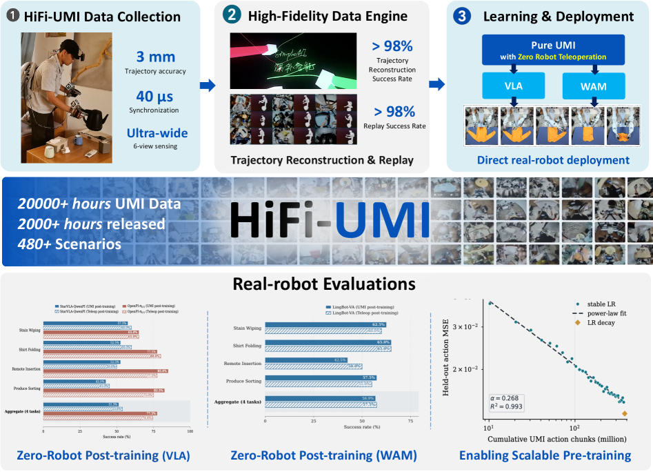
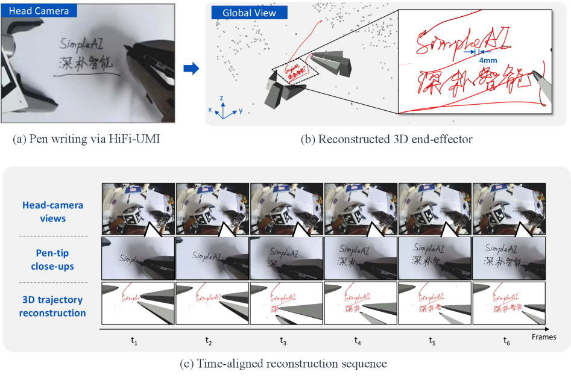
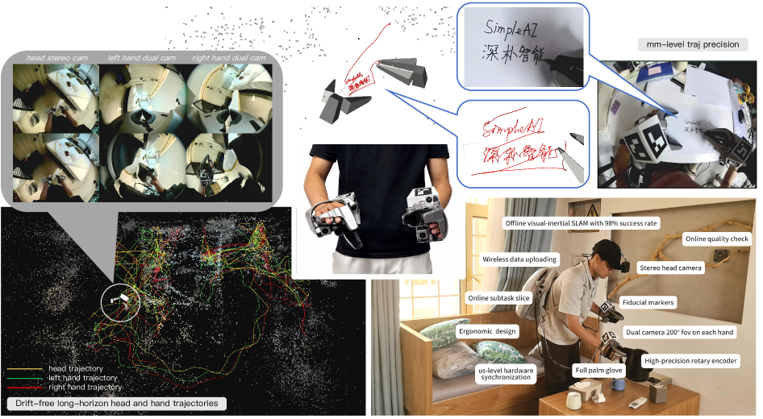
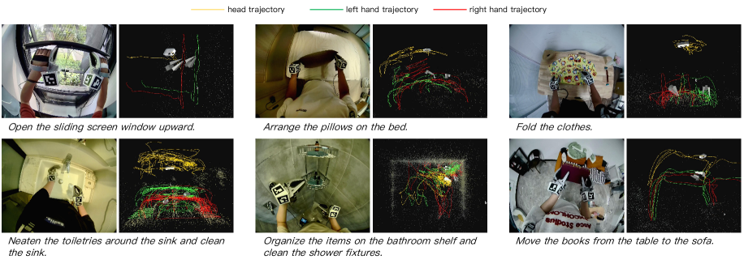
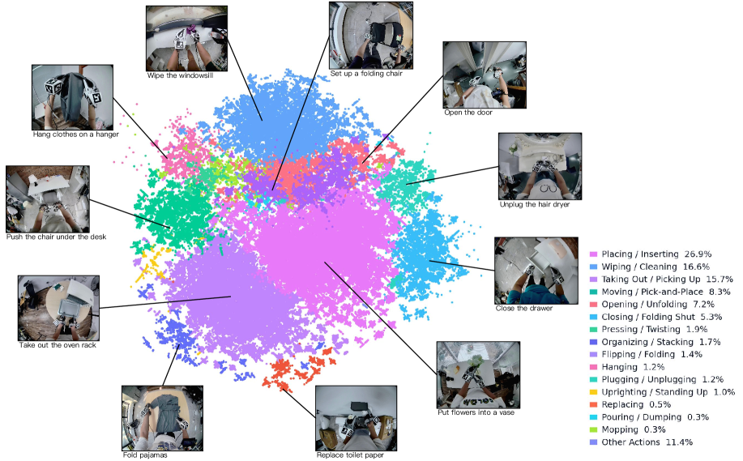

제출: 2026년 7월 28일 · Simple AI / Simple World Lab · HiFi-UMI-2K(2,000시간) 공개
한 줄 요약 (TL;DR)
UMI(Universal Manipulation Interface)는 원래 스탠퍼드/도시바가 제안한 "로봇 없이도 시연 데이터를 수집할 수 있는 손잡이형 그리퍼" 방식으로, 사람이 UMI 도구를 손에 쥐고 물체를 조작하면 그 궤적과 영상이 마치 로봇이 수행한 것처럼 기록된다. 그러나 기존 UMI는 정확도·동기화·시야가 부족해 실로봇 배포에서 성능이 크게 떨어졌다. 저자들은 HiFi-UMI라는 개선 하드웨어와 6단계 데이터 파이프라인으로 말단 위치 정확도 33mm, 센서 간 타이밍 오차 40μs 미만을 달성하고, 실로봇 데이터 없이 UMI 데이터만으로 후처리 학습한 정책이 원격 조작(teleoperation) 데이터로 학습한 정책과 성공률 격차 3.1%p 이내임을 3개 정책 백본에서 보였다. 20,000시간 이상을 수집해 그중 2,000시간·48만 에피소드를 HiFi-UMI-2K로 공개.
1배경 · 문제의식
UMI(Universal Manipulation Interface)란 사람이 손에 쥐고 사용하는 그리퍼 형태의 도구로, 도구에 붙은 카메라와 위치 추적 장치가 손 궤적을 로봇 팔의 궤적과 같은 형식으로 기록한다. 로봇 없이 사람이 자연스럽게 물체를 잡고 옮기는 것만으로 정책 학습용 시연 데이터가 만들어진다는 것이 핵심 매력이다. 기존 방식으로는 실로봇을 원격 조작(teleoperation, 조이스틱·리더 팔 등으로 실로봇을 사람이 직접 움직이는 것)하며 데이터를 모아야 했는데, 이 방식은 정확하지만 로봇 1대·1명이 붙어야 하므로 시간당 수집량이 매우 낮다.
그러나 기존 UMI 계열 시스템에는 세 가지 큰 결함이 있어 로봇으로 옮겼을 때 정책 성능이 급락했다: (1) 위치 추적 정확도가 떨어진다(수 cm급 오차), (2) 여러 센서 사이 시간 동기화가 불충분(카메라·IMU·엔코더가 서로 어긋남), (3) 시야가 좁아 손과 물체의 접촉 근방이 자주 프레임 밖으로 나간다. 그 결과 UMI 데이터만으로 학습한 정책은 실로봇에서 성공률이 크게 떨어져, 결국 실로봇 원격 조작 데이터를 대량으로 추가해야 했다. 저자들은 "UMI만으로 정말 로봇에 직접 배포 가능한 정책을 만들 수 있는가?"라는 질문에 답한다.
2핵심 Contribution
HiFi-UMI 캡처 장치 — 정확도·동기화·시야를 동시에 개선. 머리 착용 스테레오 카메라 + IMU(관성 측정 장치)로 오프라인 스테레오-관성 SLAM(카메라 스테레오와 관성 측정을 동시에 사용해 궤적을 복원)을 수행해 위치 정확도 향상, 손마다 ArUco 마커 큐브를 부착해 머리-손 상대 위치를 정밀 추정, 손마다 비평행 어안(fisheye) 카메라 2대(≈200° 시야)로 손-물체 접촉을 항상 포착, 모든 센서를 공유 GPIO 트리거로 마이크로초급 시간 동기화.
6단계 데이터 파이프라인(플라이휠, flywheel). 수집→궤적 복원(자동 클리닝)→시뮬레이션 리타게팅(사람 손 궤적을 로봇 팔 궤적으로 변환)→AI 보조 어노테이션→사람 검증→분석/내보내기의 반복 순환 구조. 처리 후 말단 위치 정확도 33mm, 센서 간 시간 오차 <40μs, 프레임 드롭 <2/h, 궤적 복원 성공률 98%, 최종 가용 데이터 비율 ≈96% 달성.
"제로 실로봇 후처리 학습(zero real-robot post-training)"의 실증. StarVLA-QwenPI, OpenPI-π0.5, LingBot-VA 등 3개 서로 다른 정책 백본에서 UMI만으로 후처리 학습한 결과가 원격 조작 데이터로 학습한 정책과 성공률 차이 -2.5, +3.1, -0.6 %p에 그쳐 사실상 동등함을 입증. 또한 4,000시간 UMI 사전학습이 미보유 태스크 10개에서 행동 오차를 41% 감소시키고 실로봇 성공률을 18.1%p 향상.
HiFi-UMI-2K 공개. 총 20,000시간 이상·480+ 씬 수집분 중 2,000시간·482,100+ 에피소드·110+ 씬을 CC BY 4.0로 배포. 사람 얼굴은 프라이버시 보호를 위해 마스킹.
3Method
3.1 하드웨어 구성 (왜 이렇게 만들었나)
왜 머리에 스테레오 카메라 + IMU를 다는가 — 손이 움직이면 도구 자체가 흔들려 도구에 붙은 카메라만으로는 절대 위치 추정이 어렵다. 머리에 스테레오 카메라 페어(두 눈처럼 나란히 배치된 두 대의 카메라, 깊이 추정 가능)와 IMU(가속도·각속도 측정으로 짧은 시간 자세 변화 추정)를 두면 SLAM(Simultaneous Localization and Mapping, 자기 위치와 지도를 동시에 추정)이 안정된다. 오프라인에서 계산하므로 실시간 제약 없이 정확도를 짜낼 수 있다.
왜 손에 마커 큐브를 다는가 — 머리 좌표계에서 손 좌표계로의 상대 자세(6-DoF pose)를 mm 단위로 얻기 위함. ArUco 같은 사전 정의된 무늬 큐브는 카메라로 여러 면을 동시에 볼 수 있어 각도에 강건하다.
왜 손마다 어안 카메라 2대를 비평행하게 두는가 — 어안 렌즈는 극단적으로 넓은 시야(≈200°)를 커버하지만 한 대만 있으면 손이 물체를 가리는 사각이 생긴다. 2대를 서로 다른 방향으로 두면 어떤 파지 자세에서도 접촉면이 최소 한 카메라에는 잡힌다.
왜 GPIO 트리거를 공유하는가 — 카메라·IMU·엔코더가 각자 클럭으로 돌면 수십 ms씩 어긋나 학습 시 원인-결과가 뒤엉킨다. 하드웨어 트리거 선(GPIO, general-purpose input/output)을 물리적으로 공유하면 마이크로초급으로 동시에 캡처된다.
3.2 6단계 데이터 파이프라인
수집·업로드: 착용자가 태스크 수행 → 원본 저장.
궤적 복원 + 자동 클리닝: 오프라인 스테레오-관성 SLAM으로 궤적 복원, 저품질 세그먼트 자동 필터.
시뮬레이션 리타게팅(retargeting): 사람 손의 6-DoF 궤적을 실제 로봇 팔의 관절 궤적으로 변환. 리플레이 검증 성공률 98%.
AI 보조 어노테이션: 태스크 설명·서브골 자동 생성.
사람 검증: 최종 라벨 검토.
분석·내보내기: 표준 포맷으로 export, 최종 가용률 ≈96%.
3.3 정책 학습 프로토콜 (왜 3개 백본에서 다 실험?)
UMI 데이터 자체의 우수성을 특정 모델에 의존하지 않고 보이기 위해 성격이 다른 3가지 대표 정책 백본에서 동일 실험을 수행한다.
StarVLA-QwenPI
Qwen 계열 VLM 기반 VLA(Vision-Language-Action, 시각·언어 입력을 행동으로 매핑), 액션 헤드는 Diffusion Transformer(DiT).
OpenPI-π0.5
대표적 오픈 소스 VLA, flow matching(노이즈에서 목표 분포로의 연속 벡터장 학습) 액션 헤드.
LingBot-VA
WAM(World-Action-Model) 계열. 미래 영상·행동을 함께 예측해 세계 모델과 정책을 결합.
사전학습 스텝: StarVLA는 배치 2,048, DiT 학습률 1e-4, 백본 2.5e-5, 3,000 스텝 워밍업, 4,000시간 데이터 = 약 180K 스텝. 후처리 학습: 배치 512, DiT 5e-5, Qwen 1e-5, 50K 스텝, 액션 지평 H=20(그중 실행 10 스텝). LingBot-VA는 배치 32, 학습률 1e-5, 3,500 스텝. 왜 이렇게 다른가 — WAM류는 영상 생성 손실까지 있어 표본당 계산량이 커서 소배치·저스텝 레시피가 유리하다.
Remote Insertion — 리모컨 정확한 꽂기. 정밀 제약 배치(constrained placement).
Produce Sorting — 농산물 분류. 언어 조건 의미 조작(semantic category-conditioned).
평가 씬에서는 UMI 데이터를 전혀 수집하지 않아 UMI 학습이 특정 씬에 오버피팅되지 않았음을 검증. 태스크·정책 쌍마다 40회 롤아웃, 정책 조작자와 씬 조작자를 분리, 태스크 정의·물체·체크포인트를 사전 고정.
4.2 UMI vs 원격 조작 (핵심 결과)
정책 백본
Teleop 데이터 학습
UMI 데이터 학습
차이 (UMI − Teleop, %p)
StarVLA-QwenPI
기준
—
−2.5
OpenPI-π0.5
기준
—
+3.1
LingBot-VA
기준
—
−0.6
UMI 데이터: 태스크당 약 3,200 궤적(10-20시간). 원격 조작 데이터: 태스크당 약 300 궤적(3-7시간). UMI 궤적 수가 10배 많지만 수집 시간은 비슷하다는 점이 핵심 — 로봇 없이 병렬 수집이 가능하기 때문. 3개 백본 모두 성공률 격차 3.1%p 이내로 실질적 동등.
기존 로봇-프리 시스템과의 비교(Table 1) — 자세 획득 방식, 정확도, 동기화, 시야, 상대 자세 측정, 그리퍼 종류, 휴대성 등 7개 축에서 정리. HiFi-UMI가 위 6가지 요소를 동시에 만족하는 최초 시스템임을 강조.
백본·초기화·후처리 데이터 소스 조합(Table 4) — 7가지 조합 실험. 사전학습된 백본 + UMI 후처리 조합이 사전학습 없는 백본 대비 큰 이득. 즉 UMI 데이터는 데이터-스카시티 상황보다 대규모 사전학습의 기폭제로 특히 강력.
데이터 스케일링 — 20,000시간 전체 대비 2,000시간(HiFi-UMI-2K)만으로도 다수 태스크에서 준수한 정책 학습이 가능. 단, 사전학습 규모가 커질수록 unseen 태스크 일반화가 지속 개선.
핵심 통찰: "UMI가 로봇 원격 조작을 완전히 대체"라기보다, 수집 처리량이 10배 이상 높으면서 성능 격차는 무시 가능한 3%p 이내라는 점 — 즉 데이터 확보 비용 대비 편익에서 압도적 우위. 하드웨어 정확도(33mm)·동기화(<40μs)·시야 확보가 이 격차 해소의 필수 조건임.
6핵심 Figure / Table

Figure 1 — HiFi-UMI 시스템 개요. 착용자가 UMI 도구로 태스크를 수행하면, 머리 스테레오+IMU와 손 마커·어안 카메라가 동기화되어 자세·영상·그리퍼 상태를 기록한다. 이후 6단계 파이프라인을 거쳐 로봇 학습용 데이터로 정제된다. (출처: arXiv:2607.25895)

Figure 2 — 3D 궤적 복원 정성 예시. 손글씨 태스크를 통해 mm 스케일 정밀도를 시각적으로 검증. 스테레오-관성 SLAM 기반 오프라인 궤적 복원의 품질을 보인다. (출처: arXiv:2607.25895)

Figure 3 — 하드웨어 개요. 머리 착용 스테레오 카메라·IMU, 손목 마커 큐브, 손마다 비평행 어안 카메라 2대(≈200° 시야), 자연스러운 힘 분포를 위한 전체 손바닥 글러브 그리퍼. (출처: arXiv:2607.25895)

Figure 4 — 6단계 데이터 처리 플라이휠. 수집→궤적 복원(자동 클리닝)→시뮬레이션 리타게팅→AI 보조 어노테이션→사람 검증→분석/내보내기의 반복 순환 구조. (출처: arXiv:2607.25895)

Figure 5 — 대표 HiFi-UMI 태스크. 머리 카메라 뷰와 3D 궤적을 함께 시각화. 얼룩 닦기·셔츠 접기·리모컨 꽂기·농산물 분류 등 대표 태스크 예시. (출처: arXiv:2607.25895)
Table 1 — 기존 로봇-프리 데이터 수집 시스템들과의 비교 축(자세 획득/정확도/동기화/FOV/상대 자세/그리퍼/휴대성). HiFi-UMI가 여러 축을 동시에 만족하는 첫 시스템임을 요약. Table 2 — 처리 파이프라인 품질 지표: 33 mm·<40 μs·98% 복원·96% 최종 가용. Table 3 — 전체 코퍼스(20,000+시간) 및 공개판 HiFi-UMI-2K(2,000시간·48만 에피소드·110+씬) 통계. Table 4 — 백본·초기화·후처리 데이터 소스를 바꾼 7가지 학습 조건과 결과.